Post-mortem: pairs-fragments
Levers: quote_match. Decision: accepted: wins. Overall: {"mean": 0.656, "low": 0.534, "high": 0.779, "units": 32}
Patterns (the analyst's reading)
- The lever successfully recovers valid claims that were previously dropped due to table formatting (using `|` for cells), Unicode variations, or minor omissions (using `...`).
- In visual regions and complex schedules, allowing `...` in quotes permits the model to stitch together disconnected text fragments (such as separate axis labels or distant table cells) to falsely support misbound or hallucinated claims.
Tweaks (the analyst's reading)
- Restrict ellipsis (`...`) matching to prevent stitching across large gaps, different structural elements, or separate text blocks.
- Consider disabling or tightening ellipsis quote matching specifically for visual regions (charts/diagrams) where text is naturally disjointed.
Partitions (the analyst's reading)
- Visual regions perform poorly with this lever (mean 0.444) compared to text regions (mean 0.773), likely due to the disjointed nature of text in charts and diagrams.
Next (the analyst's reading)
- Implement a maximum character distance or structural boundary check (e.g., no crossing double line breaks) for fragments joined by `...`.
- Evaluate applying the relaxed `|` matching only to table regions and the relaxed `...` matching only to prose text.
By kind of region
| Group | Units | Mean | Interval | |
|---|
| table | 1 | 0.0 | 0.0–1.0 | |
| text | 22 | 0.773 | 0.639–0.907 | |
| visual | 9 | 0.444 | 0.214–0.675 | |
By document family
| Group | Units | Mean | Interval | |
|---|
| drawings | 10 | 0.5 | 0.243–0.757 | |
| manuals | 2 | 1.0 | 1.0–1.0 | |
| reports | 17 | 0.676 | 0.494–0.859 | |
| rules | 3 | 0.833 | 0.59–1.0 | |
By band or whole
| Group | Units | Mean | Interval | |
|---|
| band | 9 | 0.5 | 0.2–0.8 | |
| whole | 23 | 0.717 | 0.579–0.856 | |
Sampled units: won
u-nrel-5mw-p25-36-5eaf02be-p10-text-b1of2 (text, score 1.0)
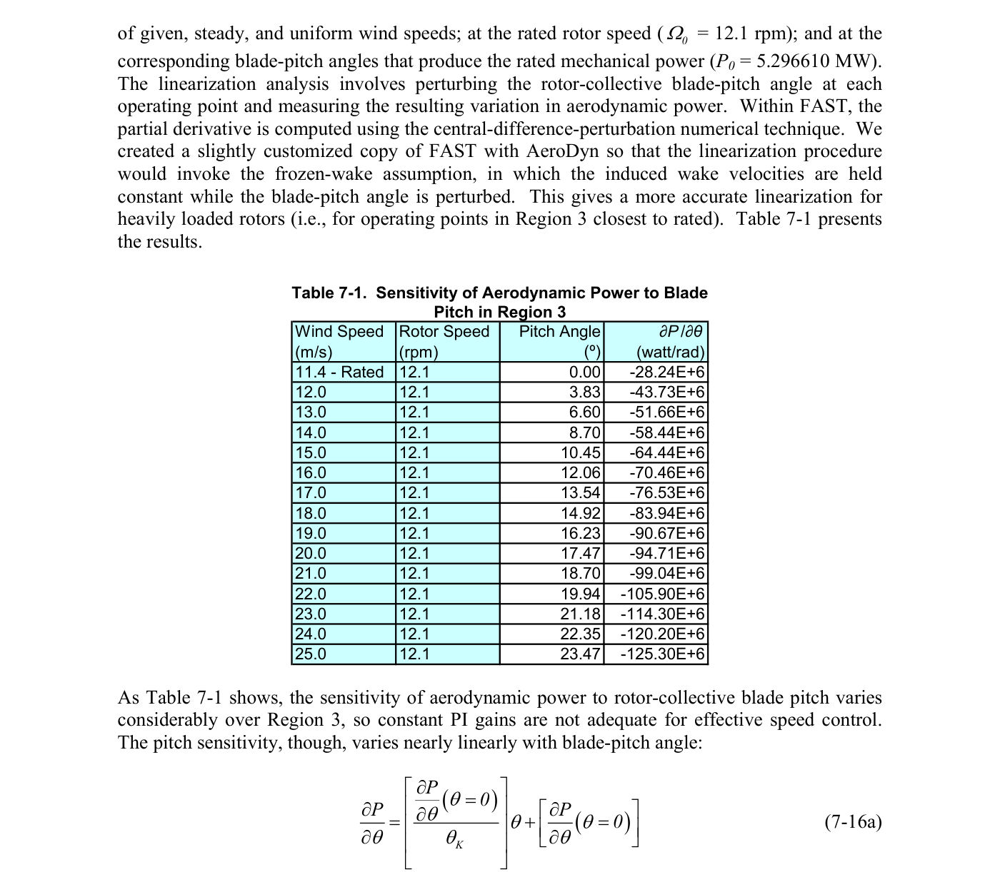
What the lever added: nothing marked
Only the baseline:
Only the variant:
- Aerodynamic Power | sensitivity to blade-pitch angle (∂P /∂θ) | -58.44E+6 | watt/rad | Wind Speed = 14.0 m/s, Rotor Speed = 12.1 rpm, Pitch Angle = 8.70 º | 14.0 | 12.1 | 8.70 | -58.44E+6
- Aerodynamic Power | sensitivity to blade-pitch angle (∂P /∂θ) | -120.20E+6 | watt/rad | Wind Speed = 24.0 m/s, Rotor Speed = 12.1 rpm, Pitch Angle = 22.35 º | 24.0 | 12.1 | 22.35 | -120.20E+6
- Aerodynamic Power | sensitivity to blade-pitch angle (∂P /∂θ) | -94.71E+6 | watt/rad | Wind Speed = 20.0 m/s, Rotor Speed = 12.1 rpm, Pitch Angle = 17.47 º | 20.0 | 12.1 | 17.47 | -94.71E+6
- Aerodynamic Power | sensitivity to blade-pitch angle (∂P /∂θ) | -83.94E+6 | watt/rad | Wind Speed = 18.0 m/s, Rotor Speed = 12.1 rpm, Pitch Angle = 14.92 º | 18.0 | 12.1 | 14.92 | -83.94E+6
- Aerodynamic Power | sensitivity to blade-pitch angle (∂P /∂θ) | -76.53E+6 | watt/rad | Wind Speed = 17.0 m/s, Rotor Speed = 12.1 rpm, Pitch Angle = 13.54 º | 17.0 | 12.1 | 13.54 | -76.53E+6
- Aerodynamic Power | sensitivity to blade-pitch angle (∂P /∂θ) | -114.30E+6 | watt/rad | Wind Speed = 23.0 m/s, Rotor Speed = 12.1 rpm, Pitch Angle = 21.18 º | 23.0 | 12.1 | 21.18 | -114.30E+6
- Aerodynamic Power | sensitivity to blade-pitch angle (∂P /∂θ) | -99.04E+6 | watt/rad | Wind Speed = 21.0 m/s, Rotor Speed = 12.1 rpm, Pitch Angle = 18.70 º | 21.0 | 12.1 | 18.70 | -99.04E+6
- Aerodynamic Power | sensitivity to blade-pitch angle (∂P /∂θ) | -105.90E+6 | watt/rad | Wind Speed = 22.0 m/s, Rotor Speed = 12.1 rpm, Pitch Angle = 19.94 º | 22.0 | 12.1 | 19.94 | -105.90E+6
- Aerodynamic Power | sensitivity to blade-pitch angle (∂P /∂θ) | -90.67E+6 | watt/rad | Wind Speed = 19.0 m/s, Rotor Speed = 12.1 rpm, Pitch Angle = 16.23 º | 19.0 | 12.1 | 16.23 | -90.67E+6
- Aerodynamic Power | sensitivity to blade-pitch angle (∂P /∂θ) | -70.46E+6 | watt/rad | Wind Speed = 16.0 m/s, Rotor Speed = 12.1 rpm, Pitch Angle = 12.06 º | 16.0 | 12.1 | 12.06 | -70.46E+6
- Aerodynamic Power | sensitivity to blade-pitch angle (∂P /∂θ) | -28.24E+6 | watt/rad | Wind Speed = 11.4 m/s (Rated), Rotor Speed = 12.1 rpm, Pitch Angle = 0.00 º | 11.4 | 12.1 | 0.00 | -28.24E+6
- Aerodynamic Power | sensitivity to blade-pitch angle (∂P /∂θ) | -51.66E+6 | watt/rad | Wind Speed = 13.0 m/s, Rotor Speed = 12.1 rpm, Pitch Angle = 6.60 º | 13.0 | 12.1 | 6.60 | -51.66E+6
Judges:
- Set A captures all fifteen rows of Table 7-1 with correct ∂P/∂θ values, units (watt/rad), and full wind-speed/rotor-speed/pitch-angle conditions, plus the qualitative claim that pitch sensitivity varies nearly linearly with blade-pitch angle. Set B contains only that single qualitative claim and omits the entire quantitative table, which is the main engineering content of this page part. Both sets state the one shared claim correctly and with a supporting quote, so B has no wrong claims, but it is missing the key sensitivity data. A is therefore clearly better.
- Set A contains only the single qualitative claim that pitch sensitivity varies nearly linearly with blade-pitch angle, omitting the entire Table 7-1 dataset of ∂P/∂θ values across Region 3. Set B includes that same qualitative claim plus all 15 table rows, each with the correct wind speed, rotor speed, pitch angle, value, unit (watt/rad) and a supporting row quote. All of B's claims match the table exactly, so B is both complete and faithful while A misses the main engineering content of the page.
u-iea-15mw-p20-31-f7071680-p12-text (text, score 1.0)
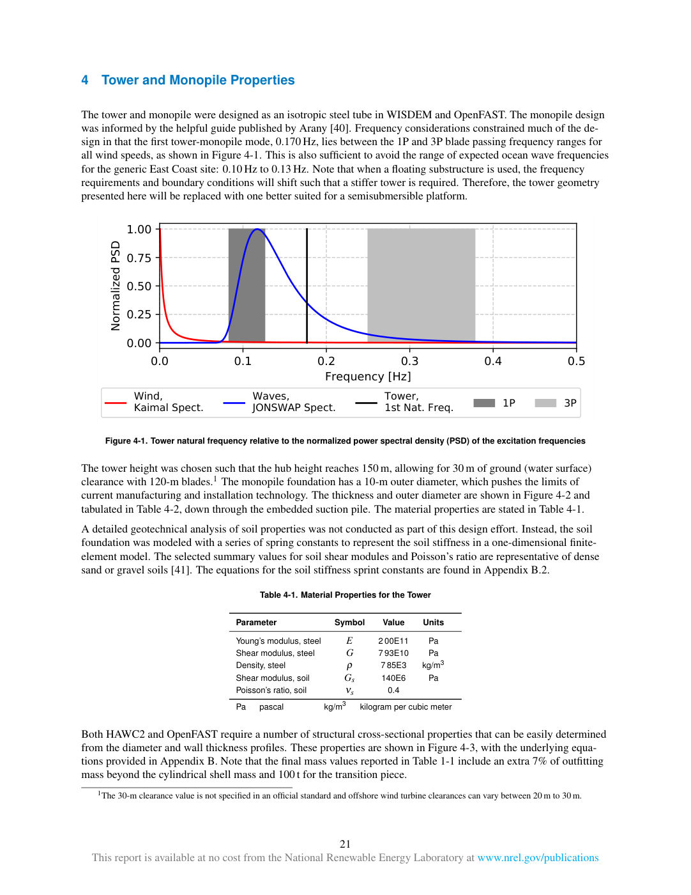
What the lever added: nothing marked
Only the baseline:
- steel | Density | 7.85E3 | kg/m3 | Density, steel ρ 7 85E3 kg/m3
- steel | Young’s modulus | 2.00E11 | Pa | Young’s modulus, steel E 2 00E11 Pa
- offshore wind turbine | clearance | 20 to 30 | m | typical variation | offshore wind turbine clearances can vary between 20 m to 30 m
- steel | Shear modulus | 7.93E10 | Pa | Shear modulus, steel G 7 93E10 Pa
Only the variant:
- final mass | outfitting mass | 7% | % | beyond the cylindrical shell mass | final mass values reported in Table 1-1 include an extra 7% of outfitting mass beyond the cylindrical shell mass
Judges:
- Set B is cleaner and captures the 7% outfitting mass allowance (plus 100 t transition piece) that Set A omits, while Set A pads its list with three duplicate pairs of the same steel properties restated with different number formatting. Set A also adds an unsupported 'typical variation' condition to the 20–30 m clearance claim from the footnote. Both sets bind the material, geometry, and frequency values correctly with supporting quotes, so B wins on fewer redundant/unsupported claims and better coverage of the mass note.
- Set A captures the 7% outfitting mass allowance (plus the 100 t transition piece) that Set B omits, while Set B restates the steel density, Young's modulus and shear modulus three times each under slightly reformatted values. Set B's extra claim on the 20–30 m clearance range is supported by the footnote, though its 'typical variation' condition is a loose paraphrase rather than text. Both sets bind the material, geometry, frequency and mass values correctly with supporting quotes.
u-rules-2013-p35-38-3c85ed49-p1-visual (visual, score 0.75)
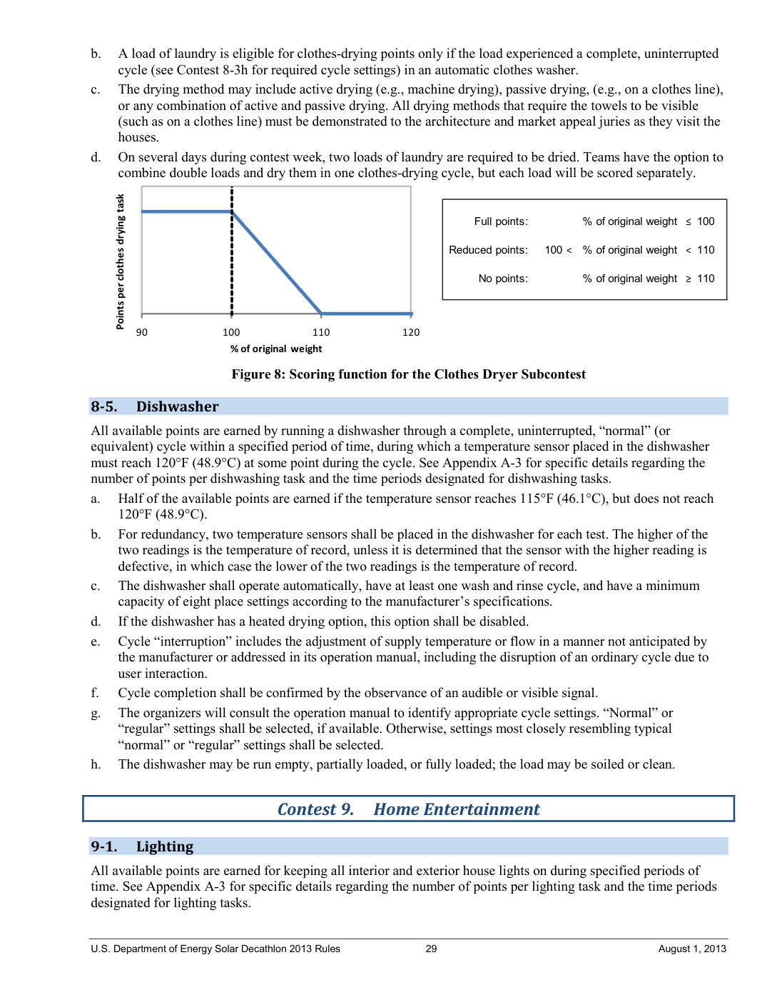
What the lever added: nothing marked
Only the baseline:
- clothes-drying points | eligibility condition | complete, uninterrupted cycle in an automatic clothes washer | A load of laundry is eligible for clothes-drying points only if the load experienced a complete, uninterrupted cycle... in an automatic clothes washer.
Only the variant:
- clothes-drying points | eligibility condition | complete, uninterrupted cycle in an automatic clothes washer | load of laundry | A load of laundry is eligible for clothes-drying points only if the load experienced a complete, uninterrupted cycle... in an automatic clothes washer.
Judges:
- The two sets are nearly identical in content, values, and quotes; both correctly bind the dishwasher temperatures, capacity, sensor count, and the Clothes Dryer scoring thresholds. Set B's only substantive addition is the 'load of laundry' condition on the clothes-drying eligibility claim, which is supported by the quote and keeps a needed condition that Set A drops. Both sets repeat the same facts under two names (sensor count, temperatures, scoring thresholds) and both omit several page facts such as the temperature-of-record rule and cycle-completion confirmation.
- The two sets are substantively identical: the same 19 claims, values, units and quotes, differing only in ordering and in that Set A adds the condition 'load of laundry' to the clothes-drying eligibility claim, which is merely the subject of that claim rather than a needed condition. Both read the Figure 8 scoring thresholds (≤100, 100–110, ≥110 % of original weight) and the dishwasher temperatures (120°F/48.9°C full, 115°F/46.1°C half) correctly and bind them to the right subcontest/component. Both sets repeat the same facts under two names (sensor count, 120°F, 115°F, and the three scoring bands stated both as 'Clothes Dryer Subcontest' and 'clothes-drying task'), so both carry the same duplication overhead. Neither set is more correct or more complete than the other.
u-rules-2013-p35-38-3c85ed49-p4-visual (visual, score 0.75)
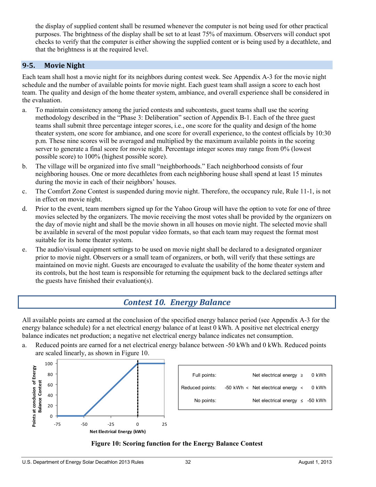
What the lever added: nothing marked
Only the baseline:
- Energy Balance Contest | full points threshold | 0 | kWh | net electrical energy balance | Full points: Net electrical energy ≥ 0 kWh
Only the variant:
- Energy Balance Contest | full points threshold | 0 | kWh | net electrical energy balance at conclusion of specified energy balance period | Full points: Net electrical energy ≥ 0 kWh
Judges:
- Set A and Set B are essentially identical across all 18 claims; the only difference is that A gives a slightly fuller condition ('at conclusion of specified energy balance period') on the full-points threshold claim, which is a negligible distinction. Both correctly capture the 75% brightness minimum, the 15-minute neighbor visit, the 0–100% score range, and the Energy Balance scoring bands (full ≥ 0 kWh, reduced −50 to 0 kWh, no points ≤ −50 kWh). Both share the same flaws: heavy duplication of the brightness and Energy Balance threshold facts under 'Contest 10' and 'Energy Balance Contest', one misquoted line ('scored' instead of 'scaled'), and two claims whose quotes are only axis-label descriptions rather than supporting text.
- The two sets are nearly identical claim-for-claim; the only substantive difference is that Set B keeps the full condition 'at conclusion of specified energy balance period' on the full-points threshold claim, while Set A drops it. Both sets correctly capture the 75% brightness minimum, the 15-minute neighbor visit, the 0–100% score range, and the three Energy Balance scoring bands. Both sets are heavily padded with duplicate restatements of the same three Energy Balance facts and the brightness fact, and both use axis-label pseudo-quotes for the figure-derived point values.
u-ken-cd-p95-98-f7b0008f-p3-text (text, score 1.0)
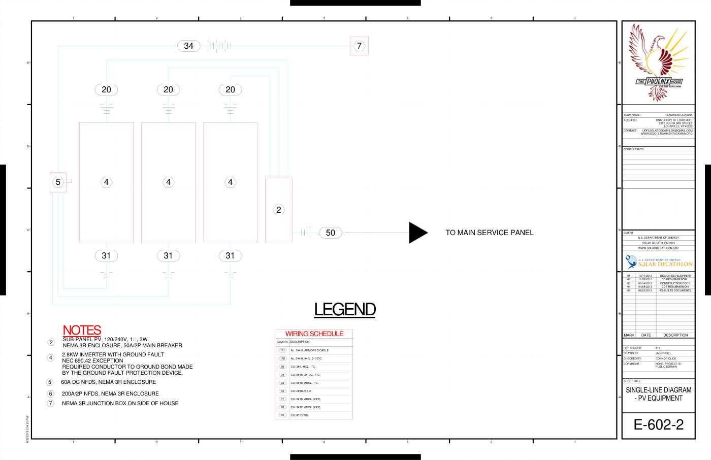
What the lever added: nothing marked
Only the baseline:
Only the variant:
- Wiring 150 | conduit size | 2-1/2 | "C | AL | 150 AL: ... 2-1/2"C.
- Wiring Schedule 150 | ground conductor size | #4G | 150 AL: ... #4G.
Judges:
- Both sets share the same core claims and the same flaw: the sub-panel 'phase' claim binds '3 W' (the 3-wire designation) to phase, when the phase is 1~. Set B additionally extracts two correct facts from wiring schedule row 150 — the 2-1/2" conduit size and the #4G ground conductor size — which Set A omits. Those extra claims are supported by the row text '50 AL: 3#4/0, #4G., 2-1/2"C.' and are not contradicted anywhere on the page.
- Both sets share the same 14 claims, including the same error of reading '3W' as the sub-panel's phase (it is the wire count; the phase is 1φ) and the same duplication of the 50A/2P main-breaker rating under two entity names. Set A adds two further claims from wiring schedule row 150 — the #4G ground conductor size and the 2-1/2" conduit size — both correctly bound and quoted. Since A's extras are correct and it introduces no additional errors, A is the better set.
Sampled units: lost
u-nrel-5mw-p25-36-5eaf02be-p4-visual (visual, score 0.0)
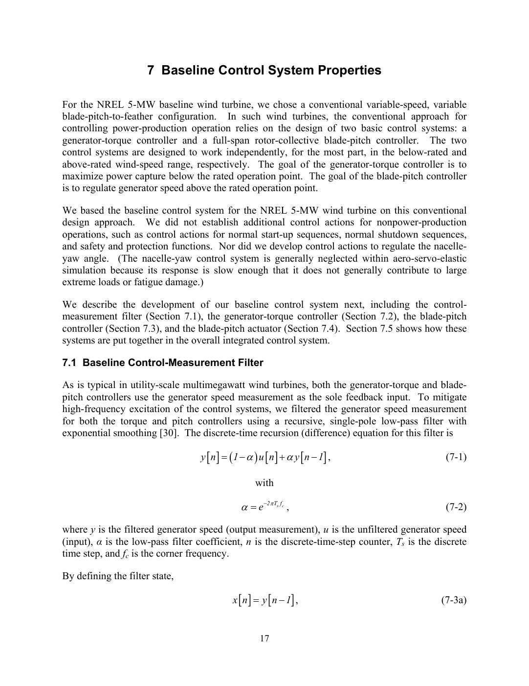
What the lever added: nothing marked
Only the baseline:
- generator-torque and blade-pitch controllers | sole feedback input | generator speed measurement | both the generator-torque and blade-pitch controllers use the generator speed measurement as the sole feedback input
Only the variant:
- generator-torque controller | feedback input | generator speed measurement | baseline control system | both the generator-torque and blade-pitch controllers use the generator speed measurement as the sole feedback input
Judges:
- Both sets cover the same seven facts with identical values, equations, and quotes. The only difference is the feedback-input claim: Set A binds the sole feedback input to the generator-torque controller alone, while the quoted sentence covers both the generator-torque and blade-pitch controllers; Set B binds it to both controllers correctly. Set B is therefore slightly more faithful with no other differences.
- Both sets agree on six of seven claims, and those are faithful: the controller goals with their rated-operation conditions, the filter recursion and coefficient equations, the turbine configuration, and the filter type. The difference is the feedback-input claim: Set A correctly states that both the generator-torque and blade-pitch controllers use the generator speed measurement as the sole feedback input, matching its quote. Set B binds the same quote only to the generator-torque controller, drops the 'sole' qualifier, and attaches a 'baseline control system' condition not present in the source. Set A is therefore more accurate and complete on this point.
u-dc-cd-p39-42-2523f154-p2-visual-b1of4 (visual, score 0.0)

What the lever added: nothing marked
Only the baseline:
- FLOOR BEAM @ GRID 5 | section | W10X15 | D5 | W10X15
Only the variant:
Judges:
- Set B is a strict subset of Set A: all 24 of its claims appear identically in A, and A adds one further claim — the W10X15 section for the D5 floor beam at Grid 5 — which the detail supports. That extra claim is correct and non-trivial, so A captures more of the page's engineering content with no additional errors. Both sets share the same weaknesses (vague 'beam opening'/'beam' entities, a duplicated 5'-0"/5 ft length for the Grid 4 beam, and a couple of dimensions apparently bound to the wrong beam).
- Set B is identical to Set A except for one additional claim — D5 / FLOOR BEAM @ GRID 5 section W10X15 — which is supported by the D5 detail in the text layer and image. All other claims are shared, including the same misbindings (e.g., ø 3" attributed to B1 when the ø 3" openings appear in the W8X13 details C1/A1) and the same vague 'beam opening' claims and duplicated 5'-0"/5 ft and 6" claims. Since the shared claims are equally good or bad, B's one extra correct, well-bound claim makes it the better set.
u-iea-15mw-p20-31-f7071680-p7-text (text, score 0.0)
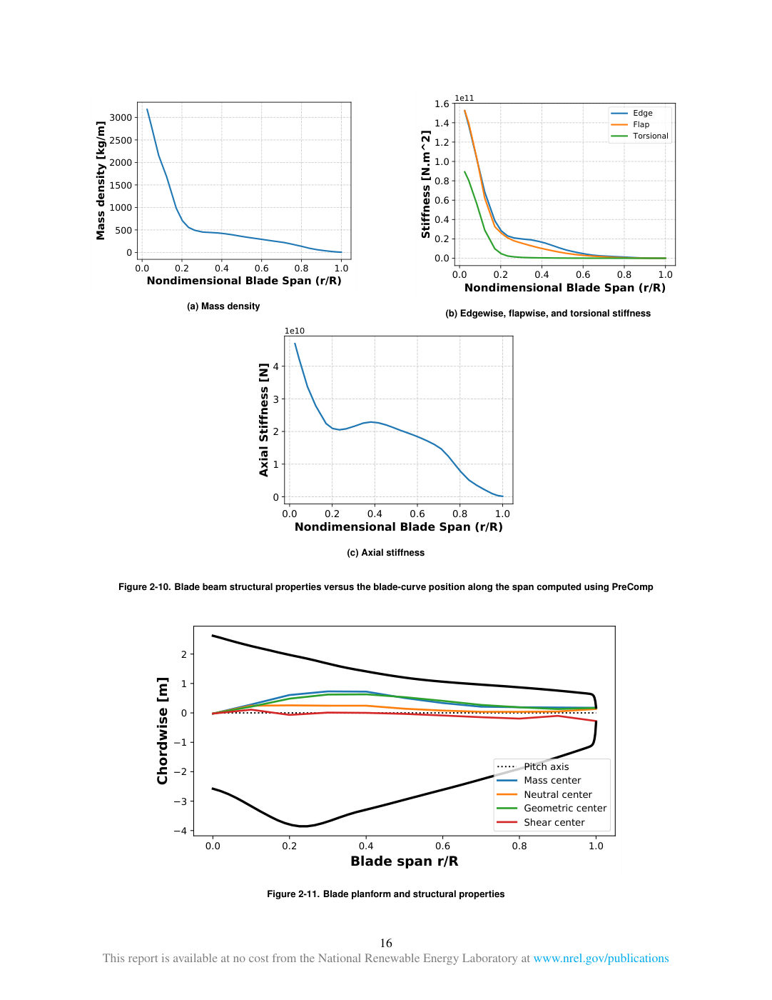
What the lever added: nothing marked
Only the baseline:
Only the variant:
- blade | axial stiffness | 1e10 | N | nondimensional blade span (r/R) = 1.0 | 1e10 ... Axial Stiffness [N] ... 1.0 Nondimensional Blade Span (r/R)
Judges:
- Both sets capture the five chordwise-offset reference lines (pitch axis, mass, neutral, geometric, shear centers) from Figure 2-11. Set A adds a claim that axial stiffness is 1e10 N at r/R = 1.0, but 1e10 is only the y-axis scale multiplier of plot (c); the curve at r/R = 1.0 is near zero, so the value is misread and misbound to the wrong span position. Set B omits that erroneous claim and otherwise matches Set A, making it the more faithful set.
- Both sets extract only the five legend labels of Figure 2-11 as 'structural property center' claims, which are vague and carry no values or span conditions. Set B adds one extra claim, axial stiffness = 1e10 N at r/R = 1.0, but 1e10 is only the y-axis multiplier and the curve at r/R = 1.0 is near zero, so the claim misreads the plot and its quote (a splice of axis labels) does not support it. Set A therefore has no wrong claims while Set B has one, making A the better set.
u-calg-cd-p62-66-e0051bec-p5-table-b0of3 (table, score 0.0)
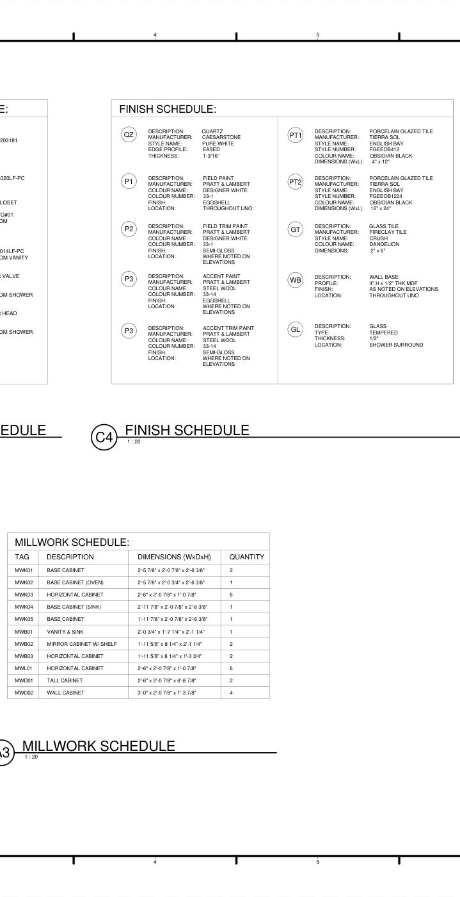
What the lever added: nothing marked
Only the baseline:
- WB (Wall Base) | profile | 4" H x 1/2" THK | material: MDF | PROFILE: 4" H x 1/2" THK MDF
- P3 (Accent Paint) | colour name | Steel Wool | DESCRIPTION: ACCENT PAINT
P3
...COLOUR NAME: STEEL WOOL
Only the variant:
- WALL BASE | profile | 4" H x 1/2" THK | PROFILE: 4" H x 1/2" THK MDF
- ACCENT PAINT | colour name | STEEL WOOL | DESCRIPTION: ACCENT PAINT
P3
...COLOUR NAME: STEEL WOOL
Judges:
- Both sets cover essentially the same 23 claims and read the values correctly, including the MWK02 oven base cabinet dimensions and the millwork quantities. Set A is slightly more faithful: it keeps the MDF material in the wall base profile claim (as a condition) and binds the accent paint colour to the tag P3, whereas Set B truncates the profile to '4" H x 1/2" THK' and uses the generic entity 'ACCENT PAINT'. Neither set invents values, and both omit the same large block of schedule facts (style/colour numbers, locations, several millwork rows).
- Both sets are largely identical and accurate on the finish and millwork schedules, but B binds the accent paint colour to the tagged entity P3 (Accent Paint) where A leaves it as the generic 'ACCENT PAINT', and B keeps the MDF material condition on the WB wall base profile while A drops it. Both sets add an unsupported 'KITCHEN' location condition to the quartz thickness and style claims, and both loosely render GL's 'SHOWER SURROUND' location as 'BATHROOM SHOWER'. B's two claims are better bound and better conditioned, so B wins.
u-calg-cd-p62-66-e0051bec-p5-text-b0of4 (text, score 0.0)
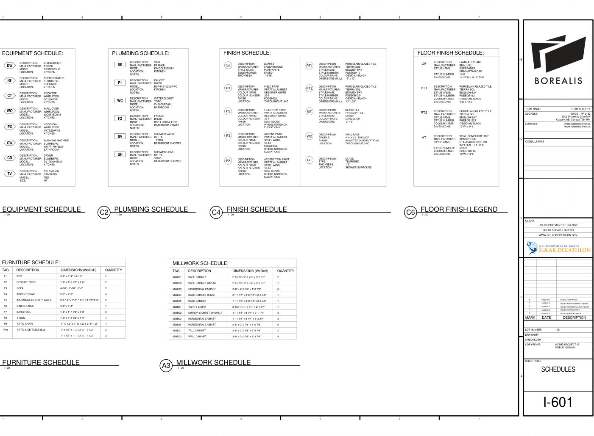
What the lever added: nothing marked
Only the baseline:
Only the variant:
- PORCELAIN GLAZED TILE | manufacturer | FIRECLAY TILE | DESCRIPTION: PORCELAIN GLAZED TILE ... MANUFACTURER: FIRECLAY TILE
- PT2 | colour name | DANDELION | PT2 ... COLOUR NAME: DANDELION
- HOOD FAN | location | KITCHEN | DESCRIPTION: HOOD FAN ... LOCATION: KITCHEN
- FAUCET | location | KITCHEN | DESCRIPTION: FAUCET ... LOCATION: KITCHEN
- HOOD FAN | model | UXT5230AYS | DESCRIPTION: HOOD FAN ... MODEL: UXT5230AYS
- TIERRA SOL | colour name | DESIGNER WHITE | MANUFACTURER: TIERRA SOL ... COLOUR NAME: DESIGNER WHITE
- WALL OVEN | manufacturer | WHIRLPOOL | DESCRIPTION: WALL OVEN ... MANUFACTURER: WHIRLPOOL
- PT2 | colour number | 33-1 | PT2 ... COLOUR NUMBER: 33-1
- HOOD FAN | manufacturer | WHIRLPOOL | DESCRIPTION: HOOD FAN ... MANUFACTURER: WHIRLPOOL
- FAUCET | manufacturer | BRIZO | DESCRIPTION: FAUCET ... MANUFACTURER: BRIZO
- TIERRA SOL | style name | CRUSH | MANUFACTURER: TIERRA SOL ... STYLE NAME: CRUSH
- WALL OVEN | model | WOS51EC0AS | DESCRIPTION: WALL OVEN ... MODEL: WOS51EC0AS
Judges:
- Set A is better because it contains significantly fewer incorrect claims. Both sets share specific misbinding errors (e.g., binding the refrigerator model to tag 'F1', assigning laminate dimensions to porcelain tile, and attributing tile colors to quartz), but Set B introduces numerous additional severe errors in the Finish Schedule, mixing attributes between Paint, Tile, and Glass items (e.g., assigning paint colors and finishes to tiles). While Set B extracts more correct equipment data, its high rate of hallucinated relationships makes it less reliable.
- Set B is preferred because it contains significantly fewer incorrect claims (3 vs 10), adhering to the preference for precision over recall. While Set A captures more correct equipment data, its high rate of misbound attributes in the finish schedule (e.g., assigning paint colors to tiles) reduces trustworthiness. Set B shares the same specific misbinding errors but limits the total noise.
Sampled units: split
u-dc-cd-p39-42-2523f154-p2-text (text, score 0.5)
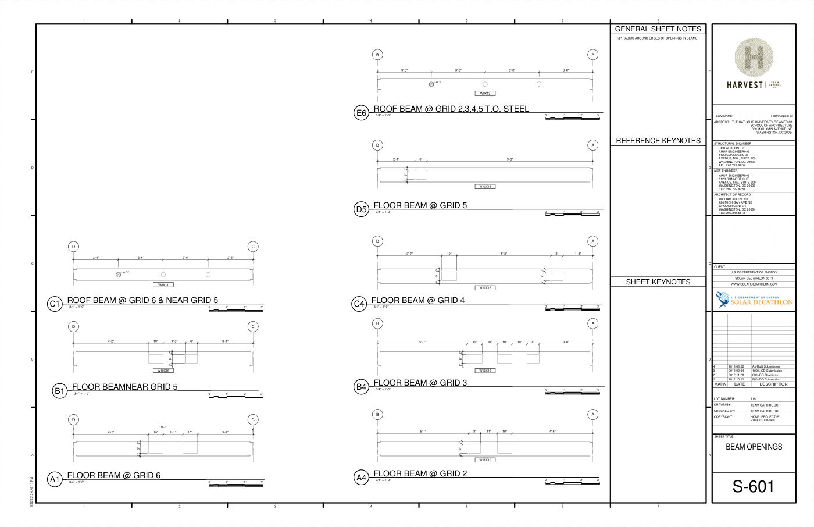
What the lever added: nothing marked
Only the baseline:
Only the variant:
- FLOOR BEAM @ GRID 5 | section | W10X15 | D5 | B1 FLOOR BEAMNEAR GRID 5 ... W10X15
- FLOOR BEAM @ GRID 3 | section | W10X15 | B1 | B4 FLOOR BEAM @ GRID 3 ... W10X15
- FLOOR BEAM @ GRID 4 | section | W10X15 | C4 | C4 FLOOR BEAM @ GRID 4 ... W10X15
Judges:
- Set A contains misbound claims where beam labels (B1) are incorrectly associated with different grid locations (Grid 5, Grid 3) or quotes that describe other beams, making those claims factually wrong. Set B is factually accurate regarding the openings and radius but misses section properties and contains duplicate claims for the same openings. Set B is preferred for having no incorrect claims, adhering to the preference for fewer wrong claims over more claims.
- Both sets incorrectly attribute a 3-inch diameter opening to beam D5 (which has rectangular openings), likely confusing it with beams C1 or E6. Set B is preferred because it correctly extracts beam section properties (W10X15) for multiple beams (D5, B4, C4) which Set A omits entirely. Set A is also highly redundant, stating the same E6 and D5 opening facts twice, whereas Set B provides more unique and useful engineering data despite sharing the D5 error.
u-calg-cd-p62-66-e0051bec-p5-visual-b1of4 (visual, score 0.5)
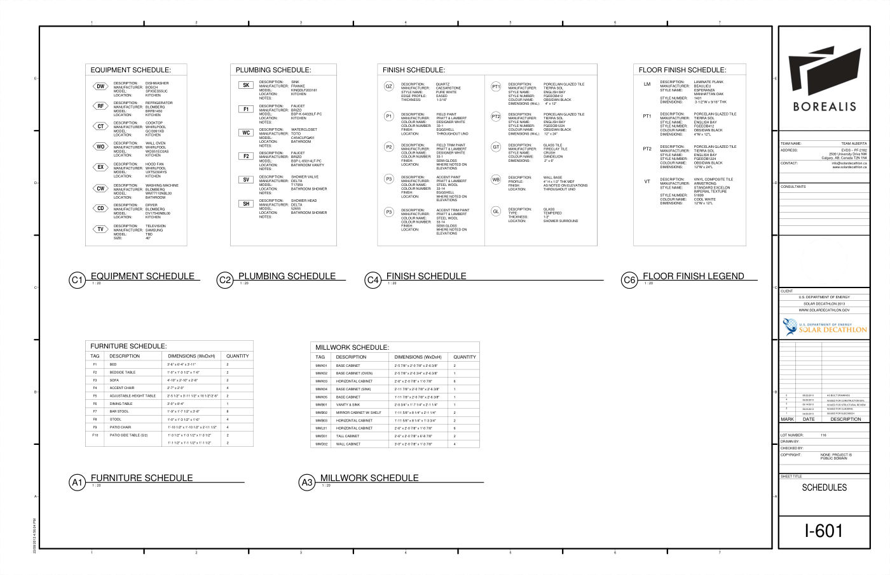
What the lever added: nothing marked
Only the baseline:
- BASE CABINET (SINK) | quantity | 1 | BASE CABINET (SINK) | 2'-11 7/8" x 2'-0 7/8" x 2'-6 3/8" | 1
- HORIZONTAL CABINET | quantity | 6 | HORIZONTAL CABINET ... 6
- P3 (Accent Paint) | colour name | Steel Wool | P3 COLOUR NAME: STEEL WOOL
- VANITY & SINK | quantity | 1 | VANITY & SINK | 2'-0 3/4" x 1'-7 1/4" x 2'-1 1/4" | 1
Only the variant:
- BASE CABINET | quantity | 1 | dimensions 1'-11 7/8" x 2'-0 7/8" x 2'-6 3/8" | BASE CABINET | 1'-11 7/8" x 2'-0 7/8" x 2'-6 3/8" | 1
- P3 | colour name | STEEL WOOL | P3 COLOUR NAME: STEEL WOOL
- BASE CABINET | quantity | 1 | Tag MWK05 | BASE CABINET (SINK) | 2'-11 7/8" x 2'-0 7/8" x 2'-6 3/8" | 1
- VANITY & SINK | quantity | 1 | Tag MWB01 | VANITY & SINK | 2'-0 3/4" x 1'-7 1/4" x 2'-1 1/4" | 1
- HORIZONTAL CABINET | quantity | 6 | Tag MWK03 | HORIZONTAL CABINET ... 6
Judges:
- Set B contains a clear misbound claim where Tag MWK05 is associated with MWK04's dimensions and description ('BASE CABINET (SINK)'), whereas Set A correctly associates the data with the description. Both sets exhibit identical text truncation errors in descriptions and manufacturer names (e.g., 'GLASS T', 'TIERRA S') and duplicate extractions for Horizontal Cabinet dimensions.
- Both sets share significant binding errors in the Millwork Schedule (e.g., misbinding MWK03/MWK04 tags and descriptions, misbinding MWB01 to Vanity). Both also share truncation errors (PORCELA, GLASS T) and an invented condition for Quartz (Location: Kitchen). However, Set A correctly extracts the MWK04 Base Cabinet quantity claim with matching dimensions, whereas Set B mislabels this item as 'Base Cabinet (Sink)'. Set A's explicit tagging in conditions makes errors more traceable, and it captures one correct fact that Set B gets wrong.